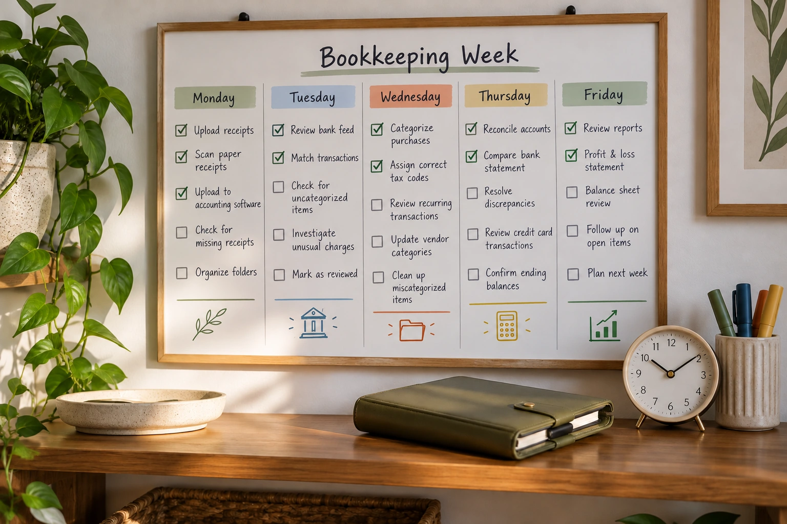

Choose a Bookkeeping Update Routine That Holds Up
Capture business transactions daily or weekly as appropriate, then complete a monthly reconciliation and review. Higher transaction volume, cash activity and urgent collection or payment decisions may require more frequent attention. The routine should keep transactions explainable and information current enough to manage the business.
Different activities have different clocks
Cash sales and customer receipts may need daily recording. Supplier bills need attention before their due dates. Receipts and business purposes are easier to capture soon after purchase. A monthly financial report, by contrast, should wait until the necessary statements and corrections for the period are complete.
Do not confuse importing with updating
A bank feed refreshing daily does not mean the books are ready. Transactions may still need matching, classification and supporting records. Cash activity and unpaid invoices may exist outside the feed entirely. Build a routine that checks those sources instead of treating a connected bank as the whole bookkeeping system.
Choose a sustainable review rhythm
For example, a small consulting practice may collect documents weekly and review complete reports monthly. A shop with daily cash activity may need a closer daily check. Reassess the routine when volume or payment methods change. IRS guidance recommends prompt transaction recording and monthly bank reconciliation. Paper Trail can help connect the frequent recordkeeping tasks with a dependable monthly close so small gaps do not accumulate into a larger repair project.